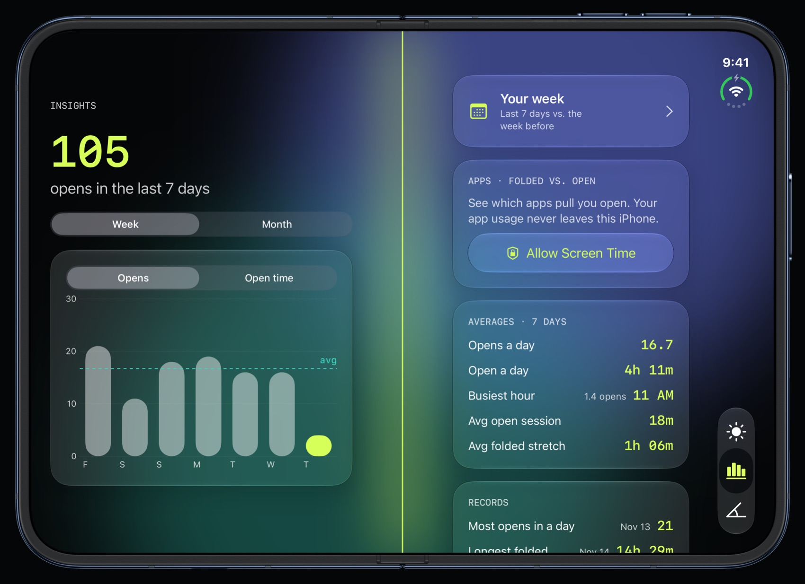
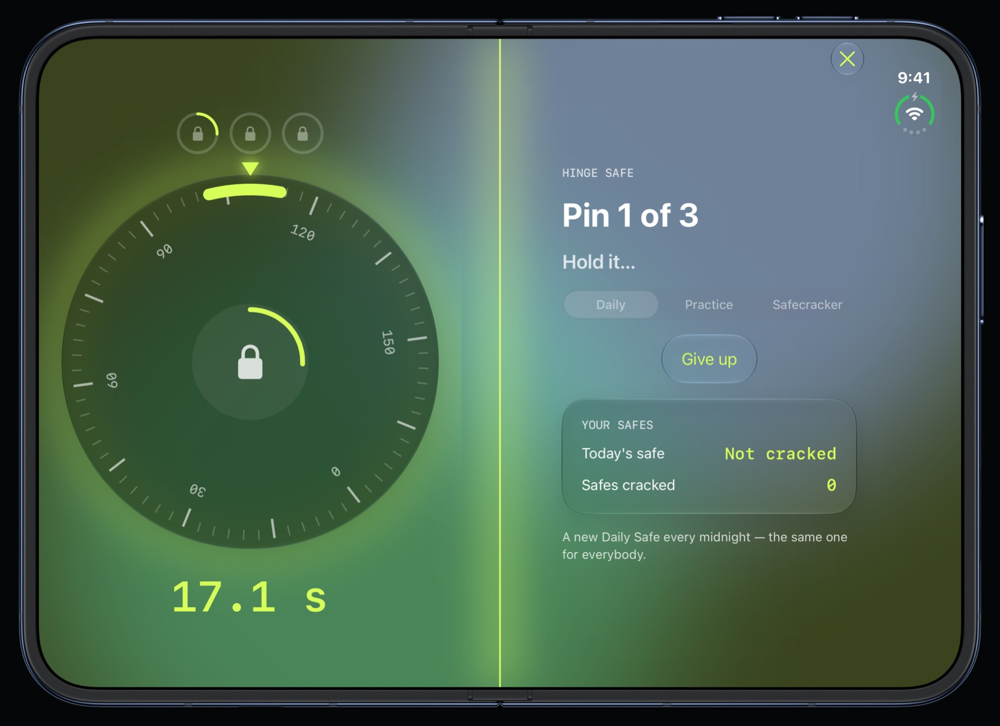
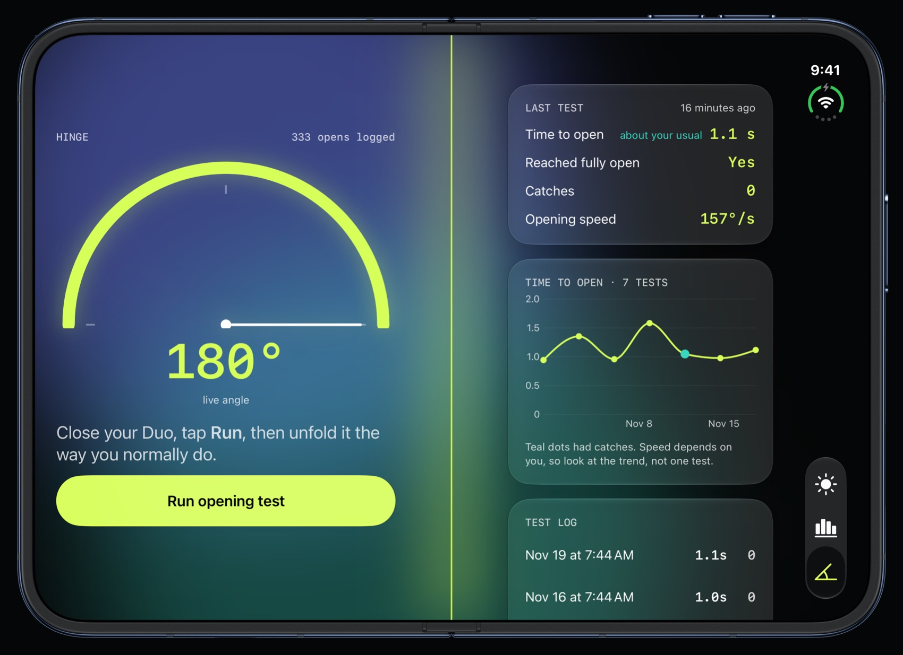
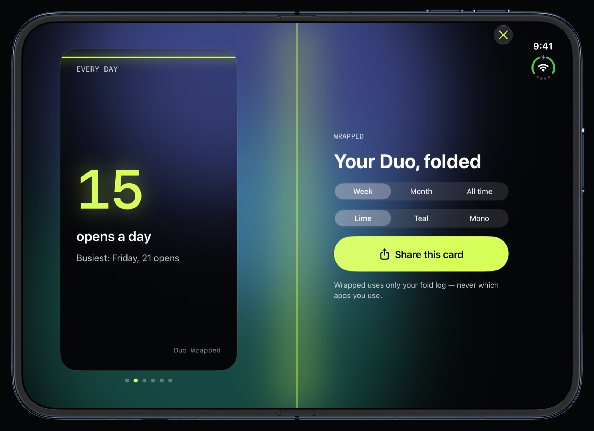
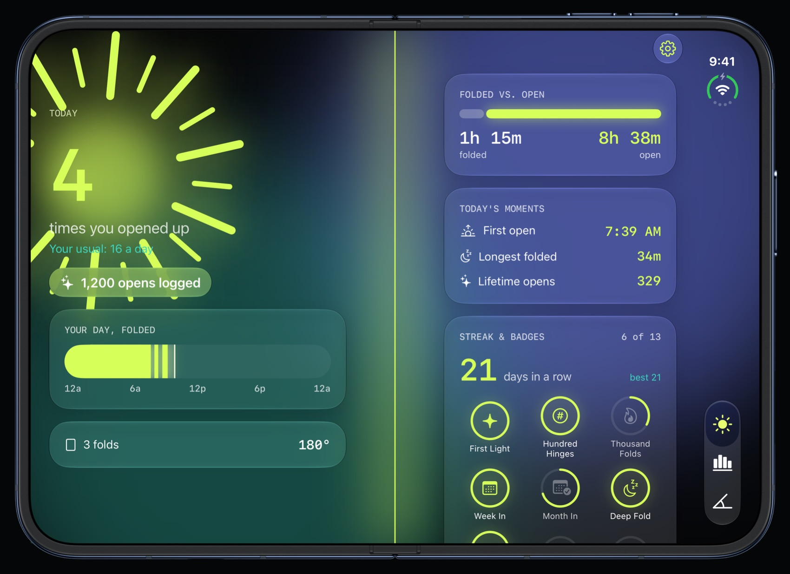

See which apps pull you open.
FoldTime lines your fold log up with Screen Time to estimate which apps you unfold for, and which you're happy to use folded. Plus trends, records, a heatmap of when you open up, and a weekly report.
EstimatedNever leaves your iPhone

Crack the safe with your hinge.
Your hinge turns a vault dial. Open your Duo to each lit mark and hold it until the pin clicks. Every click is a tap you can feel, and they get heavier as you get close.
A new Daily Safe every midnight, the same one for everybody, so you can share your time with friends.

A live angle, and your own hinge usage log.
Watch the angle follow your hinge in real time. Run the Opening Test now and then to build a record of how your hinge opens over time, and keep it as a PDF.
A personal usage log, not a diagnosis

Your week, month or year, folded.
Story cards made from your fold log: opens a day, time open, your hour, your longest folded stretch, and your Duo persona. Share them anywhere. They never include which apps you use.

Every hundredth open gets a little light show.
The count rolls like an odometer. Half-open the phone and the screen tilts like a page. Hit a milestone and the hinge light bursts. Pick your light: Lime, Ember, Ice, Rose or Mono.

And everything else
Folded vs. open
How long your day spends on each screen, and a ribbon of every stretch.
Counts in the background
One Shortcuts automation, a setup check, and missed folds filled in automatically.
Widgets
Home Screen and Lock Screen widgets, plus a Control Center button.
Ask Siri
“How many times did I open up today?”
Streaks & badges
Celebrating how you use your Duo, never how much.
Built for both screens
Two panes on the inner screen, one on the outer, nothing ever across the crease.
Pricing
- Today's opens and folded vs. open time
- Lifetime count and live hinge angle
- The Daily Hinge Safe
- The Today widget
- Apps you unfold for, trends, records, heatmap
- Weekly report and Duo Wrapped, watermark-free
- Opening Test, hinge log and PDF
- Every Hinge Safe, light colours, all widgets
- Try it free with the 3-day Trial. Family Sharing included.